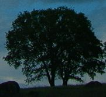
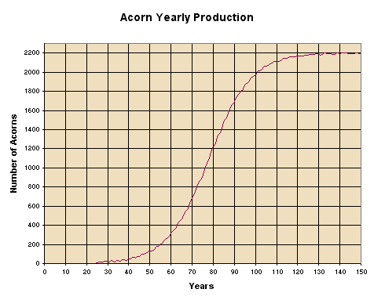
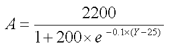
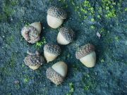
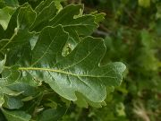

| Interesting Facts about Oak Trees |
In addition to interesting facts about oak trees, this page includes a description of the differences between the assumptions made in the population model applet and the real thing. At the end of the page you'll find references to other sites to learn more about trees and forests.

Names and definitions -- Oak trees are a type of deciduous tree. These are broad-leaved trees that shed all their leaves during one season. Forests which are primarily composed of deciduous trees are called deciduous forests. The oak tree is a member of the Beech family and its scientific name is Quercus or Lithocarpus. The best type of soil for a healthy and nutritious growth of deciduous trees is referred to as podzol (also spelled podsol).
How old do they live? -- Oak trees can live 200 or more years. The largest oak tree of record is the Wye oak in the community of Wye Mills in Talbot County on Maryland's eastern shore in the U.S.A. It is believed to be more than 400 years old, and it measures 9 meters (~ 32 feet) in circumference, it is 31 meters (~ 105 feet) tall with a crown spread of 48.1 meters (~ 158 feet).
Nutrients -- It is common to refer to the nutrients given to plants as plant food, although that is not technically correct. Plants need basic inorganic elements which they use to manufacture usable food and lock in the sun's energy into it. Here is a list of the different mineral nutrients needed by oak trees and their basic functions:
Magnesium Produces green chlorophyll Calcium Gives rigidity to cell walls Potassium Regulatory functions Nitrogen1 Provides proteins Phosphorus Provides proteins Sulfur Provides proteins To manufacture food, plants need: The nutrients + soil moisture from water + Carbon dioxide from the air + the sun's energy.
A mature oak tree can draw up to 50 or more gallons of water per day. Trees take up water through their root system. Some of the water evaporates from the leaves in a process called transpiration.
In the population program if you don't select all the nutrients and all the water required for proper growth, the tree leaves will grow yellow (more yellow the less water and nutrients). Under these conditions, the acorn production will only reach a percentage of their full potential. At some point because of lack of nutrients and/or water, the trees will not grow at all and will not produce any acorns. After looking at the previous table you now know that lacking a specific nutrient affects a different aspect of the tree development. Also, when not enough water or not all nutrients are available, the trees will grow much slower and smaller but will not stop growing.
Acorn Production -- Oak trees can start producing acorns when they are 20 years old, but sometimes can go all the way to 50 years for the first production. By the time the tree is 70 to 80 years old it will produce thousands of acorns.
The oak trees produce acorns once a year during the fall. Acorn production varies year to year and normally alternates. Not even the healthiest and largest oak can accumulate enough food and energy to produce strong crops two years in succession. Real strong acorn productions might happen every four to ten years. In addition, a late spring frost can blight the flowers which prevents acorn development. Droughts and insect ravages can decimate crops.
Acorn production will increase year after year; following a similar pattern as the size of the tree's canopy. The following graph shows what a typical production for an oak tree might be -- assuming no drastic jumps, which happen from time to time. The chart shows that production starts very slowly at around the 25th year, the number of acorns produced then accelerates, and when the tree reaches about 100 years of age, it starts slowing down until it reaches a yearly production of about 2,200 acorns per year.

The mathematical formula that relates the acorn production (A) to the age in years of the tree (Y) as depicted in the previous graph is:

As you can see, it is not a simple formula. You probably recognize the 25 and the 2200 representing the year when the production starts and the maximum acorn production respectively. You may be wondering why the curve in the graph does not look smooth, as one would expect. The reason is that randomness was added when producing the graph to make it more realistic. In reality the variations from year to year are much larger. This equation which produces a sigmoid or S-shaped curve is called the Logistic equation. You can find more information about this in the Facts about Population Growth Mathematical Models page.
The program does not use this exact mathematical model to represent the acorn yearly production. It uses instead a simplified version using only lines. This method of replacing nice but complicated continuous functions with a collection of lines is referred to as a piece-wise linear approximation.
In the population program if one doesn't select all the nutrients and all the water required for proper growth, the acorn production will decrease proportionally. At some point acorns would not be produced at all. That is really not the case with real oak trees. Lack of different nutrients has different impacts.

Acorn tales -- We now have a few interesting tales about acorns.
Acorn tale 1: Chances of making it -- In a good year the oak tree will have many flowers -- up to several thousand. With the right humidity, the right temperature, no late frost in the spring, and sufficient rainfall in the summer, tiny scale-covered acorns (called nubbins at that point) begin to grow. They will mature to become full grown and ripe acorns by late summer. The chances of one acorn making it to become an oak tree are very slim -- less than 1/10,000. That means that for every 10,000 acorns, only one will become a tree!
Acorn tale 2: Beetles destroying Acorns -- Little insects called weevils like to plant their seeds inside acorns before they mature -- during the late summer months. Up to 90% of the acorns in a region can be destroyed by the larvae of the weevils. On the other hand, if there are not enough acorns, that can impact the weevils' population.
Acorn Tale 3: About hiding those Acorns -- It is well known that squirrels hide acorns to last them through the winter season, when food is scarce. They might hide them in their homes, but they also bury them in the ground. In addition to squirrels, bluejays and woodpeckers also hide acorns underground. The number of acorns hidden by animals is pretty small; however, most of the acorns get hidden by the oak trees. When the oak trees shed their leaves during the autumn, they end up covering (and thus hiding) most of the acorns. It is interesting to know that many of the hidden acorns get rotten by mold and can not serve as food for the animals that hid them. In addition, many acorns are found by other animals, such as deer and wild turkeys, who benefit from them.
 Oak tree leave
What can destroy oak trees? -- One common element that destroys oak trees is fire. When fire, caused by lightning or by a careless human being, hits a tree, the fire can spread and burn several trees. Another common destruction is caused by developments and the use of trees for wood.
Another common cause of oak tree deaths is beetles, fungi, and bad weather. As I am finishing developing this lesson (Jun 2000) I heard on the radio the following amazing story. Oak trees in Marin County (which is north of San Francisco) are dying at a rate that has reached epidemic proportions, and scientists still don't know the cause of this2,3. Oaks, which typically take a year or so to die from infections, have been reported to die in just two to three weeks. Such massive die back of live oaks has never been reported in California, and a severe environmental crisis is expected in the months and years to come.
Balancing Tales -- For a forest to grow and develop into such nice habitats, there needs to be an almost perfect balance between the different species that live in the forest. Here are a few examples where the intricate forest balance can be upset:
Balancing tale 1: Can insects destroy trees? -- Leaf-eating insects, such as walking sticks, can damage a tree. However, these insects are eaten many times by birds; thus balancing things.
Balancing tale 2: Can fungi destroy trees? -- Fungi can invade the trunks and limbs of old trees with wounds. They soften and prepare the wood so that beetles, wasp larvae, and carpenter ants build tunnels, which further weakens the tree.
Balancing tale 3: Can caterpillars destroy trees? -- Caterpillars, when they grow in big numbers, can defoliate an oak tree. However, there is a type of parasitic wasp that destroys the caterpillar moth's eggs. If there are enough wasps that eat a good number of the eggs, there will be less caterpillars, and the trees will be happy. Three or four defoliates can destroy a tree!
Balancing tale 4: Can worms help trees? -- A crucial and unsung hero is the earthworm. During warm rainy periods it stays above ground, but during the cold winter, it wriggles downward as far as it can to avoid freezing. It spends most of the winter one to four inches below the surface. In doing so it conditions the soil for shallow probing oak roots by literally eating his way around. This is very helpful, and many times necessary, for the tree growth.
Sizes -- A trunk's circumference can be as big as 9 or more meters (32 feet), which corresponds to a trunk's diameter of 2.8 m (~ 9.5 ft). The height can reach up to 30 m (~ 100 ft). The spread of the canopy of a full grown oak tree ranges from 25 to 40 meters (85 to 135 feet) or more in diameter.
References --
[Note 1] -- Nitrogen is not really a nutrient. It is an inert gas that is required by all living things to live. Nitrogen helps plants grow large and healthy! You can visit this site to find out more interesting information about Nitrogen: http://www.webelements.com/webelements/elements/text/key/N.html.
[Note 2] -- http://himalaya.cnr.berkeley.edu/oaks/ - This site monitors the sudden oak death in coastal California and has a great description, pictures, and information about this major problem.
[Note 3] -- http://phytosphere.com/tanoak.html - Very good description of the oak tree mortality in Marin County.
[Reference 1] -- http://www.nationalgeographic.com/features/96/forest/ - An interactive site by National Geographic that allows students to explore what's in a forest.
[Reference 2] -- http://www.californiaoaks.org - The California oak Foundation's site is a very interesting site with lots of good information about oaks in California, how to preserve them, how to take care of them, etc.
Last Updated:
Arcytech
Java Home
Page
Provide
Feedback